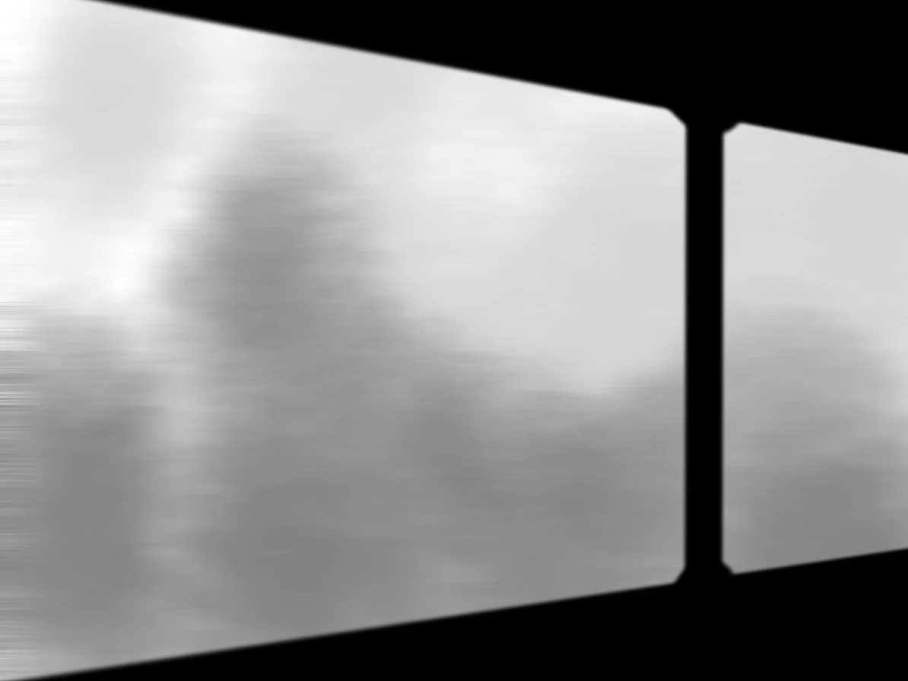
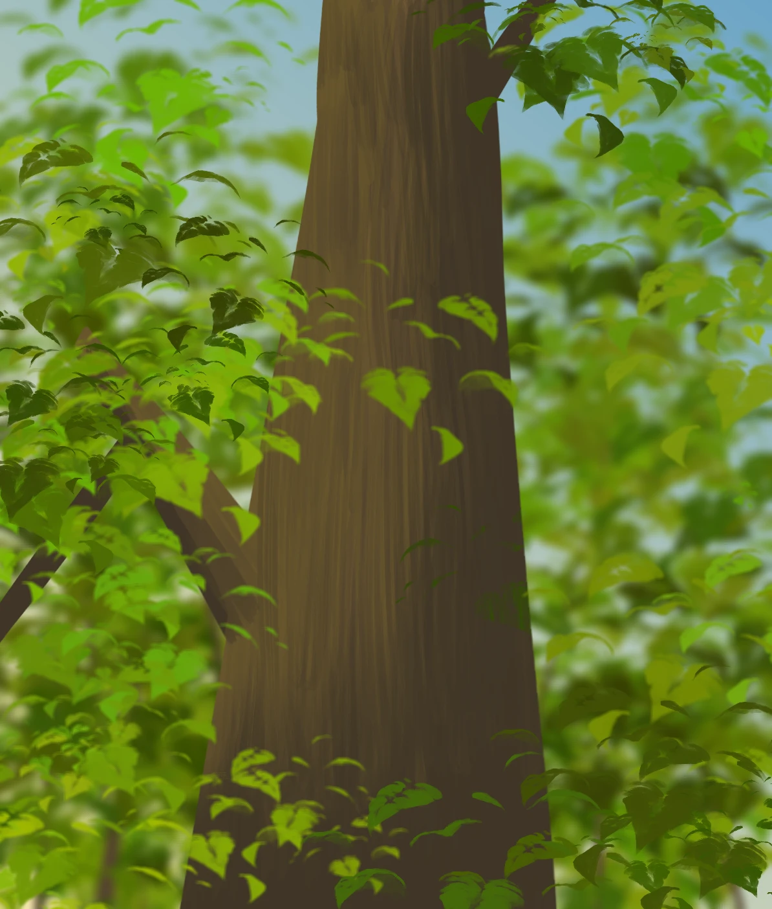
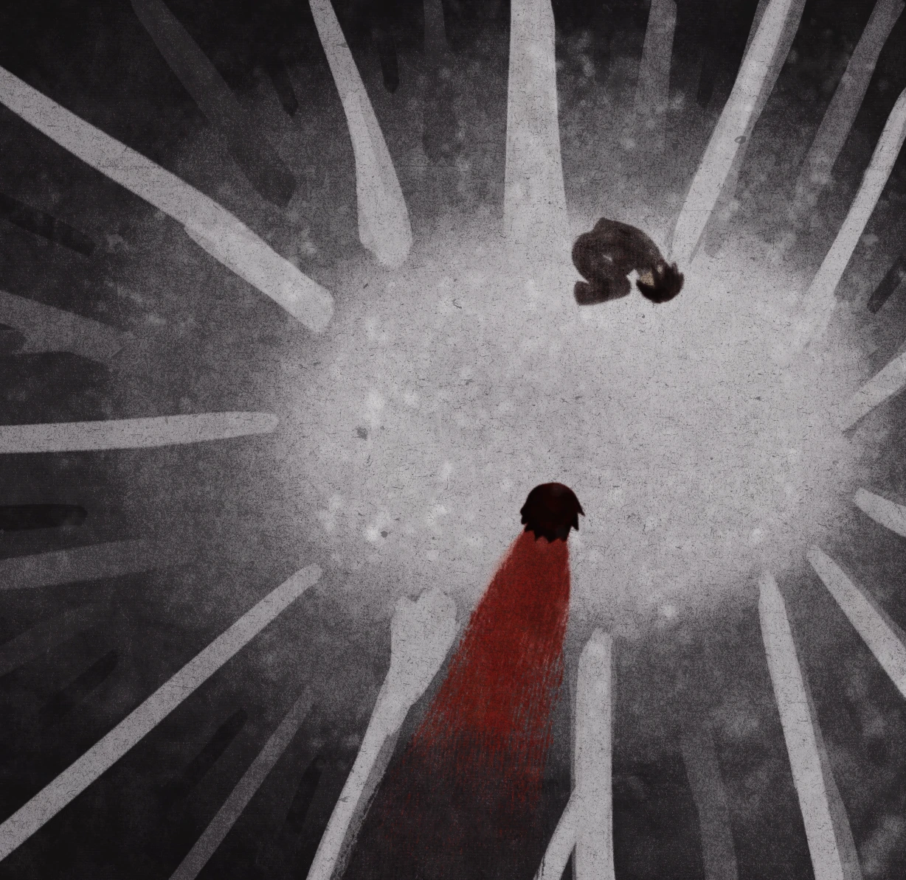

温馨提示：
1.本作为《记忆管理局》主角光环水仙向同人
2.环水无差，ooc归我
3.为了方便写作，旧环直接写为环，现环写为主角光环（如果有更好的称呼可以评论callme）
4.本作为内聚焦视角，以旧环视角为第一人称，严禁代入or拆
5.本人文笔一般，剧情设定写不出那么牛的，无存稿预警，写不下去会跑路，还请见谅。
手动存档不会被自动保存覆盖；仅保存在当前设备。
温馨提示：
1.本作为《记忆管理局》主角光环水仙向同人
2.环水无差，ooc归我
3.为了方便写作，旧环直接写为环，现环写为主角光环（如果有更好的称呼可以评论callme）
4.本作为内聚焦视角，以旧环视角为第一人称，严禁代入or拆
5.本人文笔一般，剧情设定写不出那么牛的，无存稿预警，写不下去会跑路，还请见谅。
第一幕：雪山
“铃铃铃。”下课铃声准时响起，数学老师却跟没有听到一样继续讲着手里的题目。
讲台下的声音自从铃声响起后就没有停过，细细簌簌的声音接连响起。
前桌传来一张纸条，我低头看见纸条上的字，“麻烦传给关潮，谢谢！”
抬头不出意外的，何明烁正鬼鬼祟祟的扭头往后看，双手合掌做出拜托的动作。
我抬头观察老师，他正讲到忘情，全然不知讲台地下的小动作。
“关潮。”我悄声喊他。
左边低头专心打游戏的人听到有人在叫他的名字，略带迷茫的抬头。
我乘老师不注意，将纸条丢过去，指了指何明烁示意纸条来源。
没过一会，关潮悄声喊我，把纸条又递了回来，我迅速抬头看一眼讲台上的老师，很好，还在讲课。
纸条以迅雷不及掩耳的速度被我抛给前桌。
“不是，不——是——，是给你的！”关潮着急的声音响起。
我将手搭上前桌的肩膀，示意她把纸条再抛回来 。
“咳咳咳”班主任的声音在讲台上响起，我心虚的悄悄抬头偷瞄她的视线，很好，四目相对。
“这周的登山活动，参加的同学记得明天早上八点来班里集合，放学。” 班主任走之前，还警告似的停留在我和关潮中间的过道，我可以清楚的看到关潮汗流浃背的表情。
终于下课了，我活动着久坐僵硬的肩膀，校领导不知道哪根筋搭错了要组织去雪山登山旅行，我们班的带队老师是班主任方糖。
登山地点是——白乌山。
作为登山爱好者的我学校周边的山几乎都去遍了，但是白乌山这个名字，没听说过，估计是新开的旅游景点，找学校拉客。
何明烁：雪山欸！还没去过呢。
关潮：要去好多天啊，能带游戏机吗？
何明烁：你偷偷带老班又不知道。
关潮：要充电的吧。
何明烁：也是，什么时候才能有太阳能充电的游戏机呢……
听着二人的话题从去雪山到太阳能充电游戏机，逐渐偏离主题。
百重：我记得环去过雪山，雪山是什么样的啊。
百重强行加入对话，顺带着把我拉入群聊。
我打字的手顿了一下，憋半天只憋出一个字。
环：冷
群里刷动的消息停滞了，wow，确实冷，都把群里冻住了。
我搁下手机，打算用电脑搜索一下有关白乌山的信息。
搜索结果寥寥无几，只有一条五颜六色的广告链接，果然是新开的景点，连宣传图的设计都这么……别致？
我有点犹豫要不要点击。
思索再三还是决定看看这条一看就很像垃圾广告的链接。
“您有一封新的邮件，请查收”
还没等我反应，网页再次跳转，“已查收。”
还是不点了吧，万一是诈骗网站呢。
“您有一封新的邮件，请查收”
？我对于这个网站的流氓行为感到无语。
还没等我反应，网页再次跳转，“已查收。”
亲爱的。
还在犹豫空闲时无处可去吗？我们白乌山风景优美，民风淳朴，不少雪景爱好者慕名而来。
我们有热情好客的导游，历史悠久的神话传说，丰富多彩的人文建筑。攀爬风险为0，这一趟旅游是您放松身心的最佳途径，我们由衷的期待您的到来。
因您是我们的老用户，我们赠与您景区未开放区域的门票，您可以自由探索，或许有不一样的邂逅。
快乐近在咫尺，快来白乌山吧！期待您的到来！
您最亲爱的导游■■
一张红彤彤的票根出现在屏幕上。
……还带强买强卖的？
未开放区域，有点意思，我点击收下票根，如果是垃圾短信当装饰物待在邮箱里也行。
放在一旁的手机突然开始震动，有电话。
我没多想，接起电话，对面却一片寂静，打错电话了吗？
环：“你好？”
“……”对面依旧没有声音。
环：“听得到吗？”
嘶，一阵电流声响起，刺痛我的耳朵，话筒里模模糊糊的传来鞋子踩在地上闷闷的声响，呼呼的风声里好像还有奔跑带来的衣物摩擦声。
对面传来重重的喘气声，可能是信号不好，声音好久才响起，有点失真。
“雪……山……”
“嘟嘟嘟。”电话挂断了。
（本章已结束，当前节点：主线）
我的电话依旧很久不用了，平时几乎没人打过来，思索再三还是挂断了电话。
（本章已结束，当前节点：主线）
这票根不会有木马病毒吧，入侵我的电脑什么的，删掉删掉。
放在一旁的手机突然开始震动，有电话。
我没多想，接起电话，对面却一片寂静，打错电话了吗？
环：“你好？”
“……”对面陷入长久的沉默，好像没有预料到电话打得通。
环：“听得……”
“哈……”电话另一头传来一声轻笑。
电话挂断了。
（本章已结束，当前节点：支线一）
我的电话依旧很久不用了，平时几乎没人打过来，短时间内又是票根又是电话的，不会真的摸到我的信息了吧。
我不耐烦的挂断电话。
“铃铃铃”接连的电话催命般不断响起。
环：“你好，你打错电话了吧？”
对面传来尖锐的鸣音，我把手机甩出去捂住耳朵，好痛。
嘶，血液的湿润感从耳道淌到我的手心，我匆匆找来纸巾试图止血。
手机还在响，夹杂着阵阵模糊不清的呓语。
眼前的景色逐渐变成红色，喉咙也传来血腥味，血从七窍中不断流出……
【END1：电话】
接连的突发状况让我原本坚定去雪山的心不断动摇，果然是诈骗套路吧！我决定向老师反映今晚的经历，换个旅游地点。
【END2：“好结局”】
温馨提示：
1. 本作为《记忆管理局》主角光环水仙向同人
2. 环水无差，ooc归我
3.背景音乐及内容皆为个人使用，如有不妥请私信
4. 本作为内聚焦视角，以旧环视角为第一人称，严禁代入or拆
5. 本人文笔一般，剧情设定写不出那么牛的，无存稿预警，写不下去会跑路，还请见谅。
本章含有突脸情节，限时选项情节，请善用存档
第二幕 白乌山
一大早的，说什么呢
收音机被一巴掌拍到在地上，新闻的声音被截断。
我捂着脸从床上爬起来，刚睡醒有点迷糊，看着镜子里自己坐在床上乱糟糟的面容
不想和被子分开，好困。
可惜床头的手机不想让他和被子“复合”，叮咚叮咚的消息音响个不停。
何明烁：要带登山杖吗？
关潮：要的吧。
何明烁：要带墨镜吗？
关潮：要的吧。
何明烁：要带暖宝宝，保暖手套，羽绒服，雨衣吗？
关潮：要的……等等，怎么还有雨衣？
百重：你们俩……唱戏呢
灰火：班主任不是发了一份清单吗？
物品准备这件事大多数人早在两天前就准备好了，早上这出很明显是旅游的激动心作祟。
昨天晚上还听见隔壁何明烁关潮俩人大半夜叮叮哐哐，老旧的墙壁隔音不是很好，甚至能听见两个人在讨论第二天去旅游开直播。
得亏这栋楼住的人实在少，除了我们三个人，只有四五家住户，隔得又远，这才避免了一场邻里冲突。
昨天放学被我肆意丢开的书包又被我灰溜溜捡回来，在里面左掏掏右掏掏，终于在书本夹页里掉出一张购物清单
随之掉出的还有一张小纸条
关潮给的？
... .- .-..
什么乱七八糟的，百重该不会把自己上课开小差的纸条传给我了吧。
今天的阳光真好，开门的时候还能看到邻居新买的向日葵，小小的花盆里一朵大大的向日葵昂首挺胸的朝着太阳，活像路招牌。
“喵~”一只脏兮兮的白猫从花盆后怯生生的探出脑袋。
好萌！ （注意：此选项为往后解密难度选择，困难模式可参照“纸条”）
遇到小猫咪谁能忍得住！我蹲下来试探的伸出手，白猫完全不怕生，看到我伸出的手指直接靠了过来。
这只猫实在脏，也不知道是去哪里蹭的一身白灰，在我的腿边蹭来蹭去，把我原本黑色的裤子硬生生蹭成了白色，还没出发就跟去到雪地里一样。
“别蹭了，你都把我的裤腿蹭白了。”
我将那只猫提溜起来一看，这哪里是白猫，猫毛上的墙灰掉了些露出点黑色，这明明是奶牛猫！
哦，小猫，可惜我现在着急出门，不能给你呼噜呼噜毛了
我感到一点可惜，那只猫在我的脚边蹭来蹭去把身上的灰都蹭到了我的身上。
“好了，我事先说明，白乌山是近几年新开放的一处山脉，攀爬难度不高，就当游乐园玩。”
“不过，也因为是新开放的，所以未开发区域很多，危险没办法预测，到的时候会有人派发地图，逛的时候注意看地图，小心别走错。”
“方糖！轮到你们班了”十字星的声音响起，催促着一班人像小鸡仔一样被一个一个拎上大巴车。
大巴车摇摇晃晃的形势在路上，窗外的景色渐渐染上雪色（突脸预警）

！
周围的窃窃私语依旧没变，同学们该聊天的聊天，该打游戏的打游戏。
刚刚是错觉吗？
再看时窗外已经空无一物。
“终——于——到了，这车坐得我腰酸背痛的。”百重下车伸了一个大大的懒腰。
大巴车停在一间小木屋前，木屋的牌匾上写着“白乌山旅客休息处”。
门口直愣愣站着一个人，裹得极厚，行动起来有点僵硬，看起来呆愣愣的。
这人口音很重，讲话的声音被厚厚的衣领盖得闷闷的，他说他是白乌山旅游景点的负责人，而后像讲累了不愿说话，直接给每个人发了一张折页地图，打发了我们一群人。
（恭喜！获得无用的道具：地图）
“欸，关潮快来看，这里居然有家门口的花！”何明烁指着木屋边的一颗长满黄色花朵的树喊关潮。
我也凑过去看，还真是，每年六七月份，这种花一开一大片，橙黄色的花藏在树叶间，香味又甜又香，整个楼下是浓浓的花香。
黄兰
黄兰，此花喜阳不耐寒，花香浓郁。到处逛逛吧。
已完成 0 / 4
东边有一大片树，远远的花香内混杂着一丝花蜜香味，我有些不安，看向旁边的树木。
这树有点眼熟……好像也是……是什么来着？

沉香树电白奇楠：味道厚重，层次多，是很深邃的香味
大巴车停靠在这里，再往外走就是出口了
西边是小屋后，负责人在这里堆了一批柴火，没什么特别的景色
北方的雪堆的比较厚，裤腿上的白墙灰都被衬的黑了几个度
再往北，雪更厚了，明明最近没有雪天，地上的雪却异常的厚，走起路来有点艰难。
远方的广播不知道在喊着什么，我努力想听清，但风声盖过了广播声。
什么时候风这么大了，有点冷。
“铃铃铃”，不知道哪来的铃声，我应激的掏出手机。
不是我的铃声。
响声从雪地里传出来，雪地里有一部野生手机？！
也不知道是哪个粗心的旅客丢的，估计现在着急找手机呢。
“喵？”一声猫叫传来，盖过铃声，居然是早上那只奶牛猫！
我想接电话告诉失主手机被我捡到了，开屏一看居然还要密码……
手机上有一串意义不明的数字，好像有什么规律：
26-8-21
10-21-5
7-21-1-14-7
8-21-1-14-7
（输入中文）
提示：
（已解锁）
终于解开了，冷风已经冻得我的脑子有点转不过来。
对面再也没有回复。
身边的猫像通灵性似的坐在原地抬头望着我，感受到我的视线，施施然站起身就想往右走。
“走错啦。”我抱起它，这天……我决定先听短信的。
远远就看见一个人影，我警惕的停下脚步，努力辨别那人的容颜。
那只猫一直在我的脚边转来转去像有话想说。
我蹲下身结果猫往左边两三步跳开了。
“欸，你等等！”
冷风吹得我有点头疼。
这么冷的天，一只猫在外面会冻死的吧，我急忙追了上去。
追着猫往前跑，远远就看见一个人影，我警惕的停下脚步，努力辨别那人的容颜。
开始下雪了，雪把周围的一切打上雾蒙蒙的氛围，看不太清。
我往前靠近几步，才发现那人面上覆着一层面具，类似向日葵褪去了色彩的面具盖在脸上。
看不到一点面上的皮肤，只有几缕黑色的发丝裸露在外。
那人举着手，“票根。”声音透过面具，空灵的仿佛从天边而来，语调微微上扬。
票根？我突然想起那小广告赠与的票根。
想起那张被我当成电子垃圾处理掉的票根，不由得有点尴尬。
像是看到我的窘境，蒙面人主动为我解围：“没关系，我这有卖。”
他变戏法似的从身后掏出一张红彤彤的票根。
“哈！”原本在地上安安静静坐着的猫突然对着那人哈气。
“你这猫真凶。”蒙面人将票根在猫面前晃来晃去打趣道。
风雪越来越大了，时间不等人。
我向他购买票根，可他说“我不要钱。”
再问，蒙面人却什么都不说了。
左右外头风雪过大也无法回去，我还是决定购买下。
红彤彤的副券被撕下，蒙面人让开一条道路。
我半信半疑的看着他，等待他索要报酬，但那人就跟石化了一样一动不动，只用大大的向日葵面具对着我。
嘶，有点冷，察觉到我有点失温，不等我多想，直接往深处跑去。
越往里走越暗，明明现在的时间应该是下午两三点，可太阳却像被暴风雪挡在外头，只留下一丝丝光线。
身后传来细细簌簌的声音，像有东西在高速移动，雪地被急速划过的声响。
我不敢回头看，生怕看到些不该看的。
失温会让人产生严重的幻觉，都是幻觉，都是幻觉……都是幻觉……
......
身后传来空灵的蛊惑般的声音，我不受控制的扭过头。
映入眼帘的是一个人，不，不是人。
身高将近三米多，站在树后细小的树干根本挡不住巨大的身影，怪物……
怪物向我走来
怪物的脚步逐渐加快，为了活命我拿出了跑体测的水准，也只比它快一点
怪物渐渐感到不耐烦，巨大的爪牙往我的背后抓来。
怪物的爪牙擦着我的脸而过
我不敢回头继续往前跑，渐渐的身后没有了声息，连着跑出好一段距离，才敢迅速往后瞥一眼。
售票员的向日葵面具远远的望着我
“欢迎光临~”
（本章已结束，当前节点：主线）
怪物的爪牙狠狠捅进我的腹部
如果在雪地燃起火堆或许会得到温暖吧，我不确定这是否是失温得到的幻觉。
至少在最后的火焰里，我又看到了那久违的太阳。
是太阳还是向日葵呢？
【END4：报酬】
且不说这犄角旮旯的地方不知道哪里蹦出来一个蒙面人卖东西，就只看这个地方是一只猫带我来的就诡异至极，保险起见还是不要购买的比较好，万一和票根一样是一系列骗局呢？
我谢绝蒙面人的好意，转头离开。
暴风逐渐变大，突如其来的暴风雪让我看不清眼前的路。
好冷。
我继续往来的方向返回。
好冷。
刚刚有走这么久吗？
好冷。
疼痛，手脚刺痛，我的手止不住发抖，腿止不住发软。
好热。
莫名的感觉到热，手里恢复了一点力气，将外面一层衣服脱下才好受点。
好困。
远处有人？
远方的身影渐渐靠近，在我身边蹲下身
他握住了我的手，他的手是那么温暖
他环抱住躺在雪地里的环，他的怀抱是那么亲切
好温暖
好幸福

【END3：失温】
地上的猫向等不及了，突然发难，直接扑到蒙面人身上，蒙面人被猛地推翻倒在地上。
我乘着空隙直接冲过去，回头找猫，就看到蒙面人摆烂似的躺在地上，见我回头，举起手向我挥了挥。
“欢迎光临~”
（本章已结束，当前节点：主线）
票根？我突然想起那小广告赠与的票根。
“这个？”票根被我举到他面前
他点点头，变戏法似的在我的手机后“抽出”一张票根，当着我的面撕开副券。
“欢迎光临~”
（本章已结束，当前节点：主线）